I’m Catherine, a Senior Product Designer based in Dublin. I turn ambiguous technical problems into testable product direction, clear workflows and shippable experiences — across discovery, interaction design, design systems and AI-assisted prototyping.
One subscription, three actors — customers, vendors and internal operations. I mapped the shared states and ownership behind every subscription so each person could see what they own, what’s safe to change, and who acts next.
Impact — the 4 most-viewed marketplace pages are all ones I designed, drawing about 1 in 5 page views; the commerce pages hold attention longer than the site average (Google Analytics).
During the MUI → shadcn/ui migration, I partnered with frontend engineering to strengthen Storybook, then built a governed Claude workflow grounded in implemented components, exact GitHub tokens and page-level patterns.
The loop — every prototype became a test of the system: generate, compare with production, find the missing context, improve the source, regenerate.
Atomic design
Storybook
Claude Code
PATTERNS.md
Read the case study →
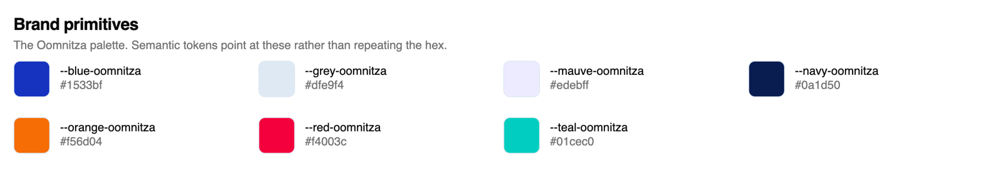
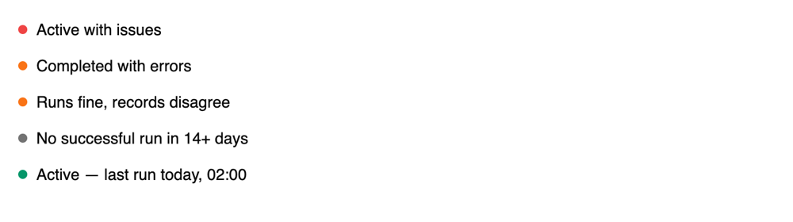
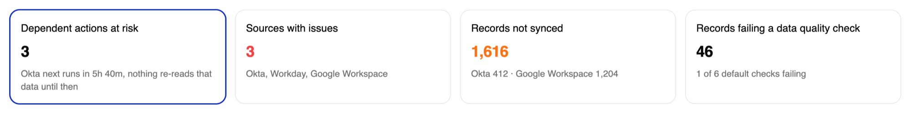
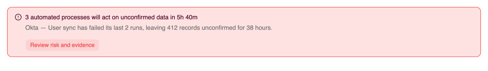
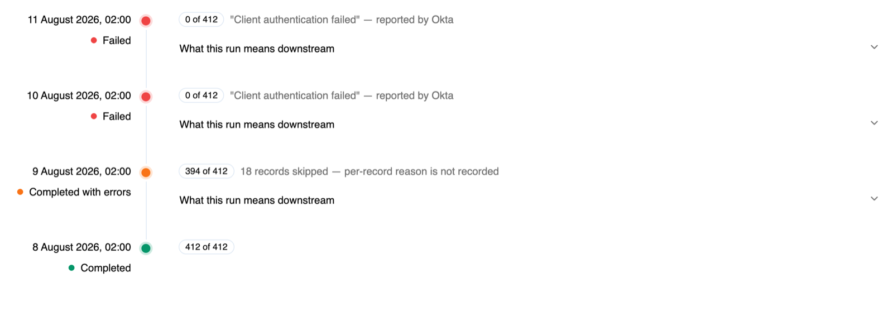
Fig. 03Components built on shadcn/ui and Oomnitza tokensReal screens
IT teams lean on Oomnitza at high-stakes moments — audits, onboarding, offboarding. I framed the problem with stakeholders, mapped the admin’s tasks, and prototyped an MVP that flags stale data before automation acts on it.
Today — 17 subtasks across 5 screens and 3 people, starting after a helpdesk ticket. Proposed — 6 steps in one place, before the next workflow runs.
Jobs to be done
Task analysis
MVP prototyping
Read the case study →
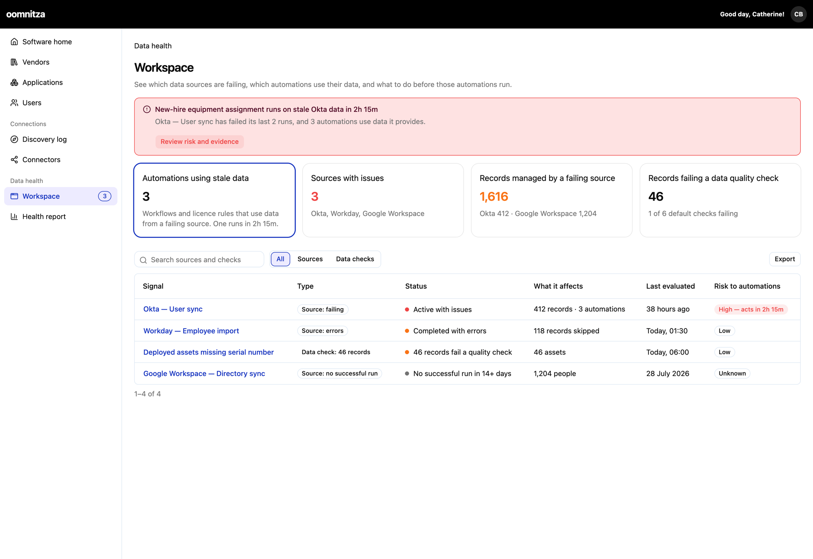
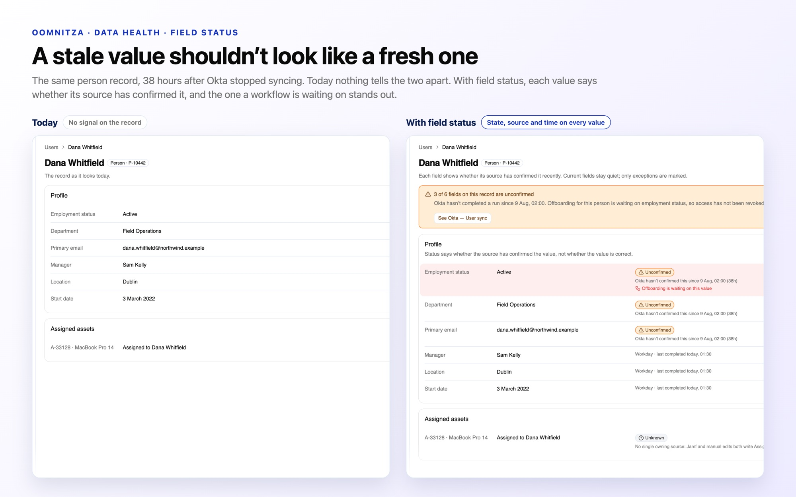
Fig. 04Overview, risk banner and field statusReal screens
Following Irish players across clubs and leagues means piecing together match reports, stats sites and transfer news. I designed and built a product that answers what fans actually ask — who’s improving, who’s playing, who’s breaking through.
Ownership — product scope, information architecture, interface, design tokens, and the data workflow that keeps it current.
Six years of making complex enterprise products feel simple — from cloud spend to subscription marketplaces to IT asset data.
I’m at my best in ambiguous problem spaces — making sense of research, technical constraints and business needs, then turning them into clear workflows and shippable product experiences. I work closely with product managers and engineers across discovery, interaction design, prototyping, usability testing and design systems.
Lately I’ve been building Claude workflows grounded in design-system patterns, Storybook and frontend source code, so prototypes match the real product and design sits closer to implementation.
Outside work, I’m usually running along the coast or being supervised by Milo, my cat.
Methods
Service blueprints
Hierarchical task analysis
Jobs to be done
Usability testing
Design systems
Tools
Figma & FigJam
Storybook
Claude Code
GitHub
Path — most recent first
2026Senior Product DesignerOomnitza · March–SeptemberData Health discovery, the MUI → shadcn/ui migration, and Claude workflows grounded in Storybook.
2023–26Senior Product DesignerSoftwareOne MarketplaceLed the design system across products; marketplace, FinOps and analytics tools.
2022Postgrad, Data AnalyticsTU DublinQuantifying user feedback for product decisions.
2020–23Product DesignerPyraCloud by SoftwareOneRedesigned Cloud Spend; nine rounds of end-to-end usability testing.
2020Masters, Digital Media & UXTU DublinWhere the systems thinking started.
2017BA Fine ArtTU DublinWhere I learned to look closely.
Fig. AOne subscription, three views — client, vendor, operationsReal screens
At a glance
More self-service, less reliance on account managers.
Outcome
The home, agreements, subscriptions and orders pages I designed are the marketplace’s four most-viewed pages — about one in five page views.
Supported the journey from purchasing a subscription through to its ongoing management.
Customers completed more workflows independently, reducing reliance on account managers.
Customers, vendors and internal teams got clearer role-specific actions and subscription states.
Sales teams could demo subscription management without Product or Engineering support.
Reusable collection and object-page patterns carried across the wider marketplace.
My contribution
Mapped the actors, systems and operational dependencies behind a subscription.
Worked with subject-matter experts on subscription lifecycles and agreement constraints.
Defined scenarios for customers, vendors and internal operations teams.
Designed the purchase, subscription-list and subscription-management experiences.
Created reusable patterns aligned with the marketplace design system.
Partnered with developers on usability and technical feasibility.
The challenge
Nobody could see the whole subscription.
SoftwareOne’s marketplace let enterprise customers buy and manage software from many vendors. But pricing, renewals, ownership and operational status were spread across different systems and teams.
Customers often depended on account managers to interpret what a subscription meant, who controlled it and which actions were safe to take.
Let several actors view, request and complete subscription changes — without conflicting agreement updates — while making status, ownership and consequences clear.
Understanding the system
A subscription isn’t owned by one person, or one screen.
Every transaction involved three primary actors. Rather than designing three disconnected experiences, I mapped the shared states, decisions and dependencies between them.
Customers
Need to understand what they own and manage it safely.
Vendors
Supply the product and its commercial conditions.
Operations teams
Handle agreements, approvals and exceptional cases.
I then built a service blueprint showing how an order becomes a manageable subscription across the customer experience and the systems behind it. It gave Product, Design and Engineering one shared model of the journey — and exposed exactly where ownership or status could become ambiguous.
Receives subscription data (start date, grouping, renewal)
Stores subscription in system
Reviews order items
Applies product & commercial rules
Decides: new vs existing subscription grouping
Activates subscription
Sends confirmation back
Trace one orderPress play to follow a subscription order through every lane.
Fig. BService blueprint — a SoftwareOne client orders a subscription5 lanes · 5 moments
Role-specific views
Same subscription. Three views. One shared model.
Here is the same Creative Cloud subscription as the client, the vendor and SoftwareOne operations see it. Each role sees the numbers it owns and the actions it’s allowed to take, so changes don’t collide with someone else’s side of the agreement.
Signed in as clientSell price (SPx)Sell-price columns
Signed in as vendorPurchase price (PPx)Item-level edit
Signed in as operationsPurchase price → yield → sell priceSplit billingOps-only tab
Fig. CSubscription SUB-4321-8765-0987, three ways · hover to magnifyReal screens
Client Stark Industries
Sees what they pay: the sell price (SPx) for the subscription and every item.
Licensee, terms, renewal date and billing model sit together in one summary.
One primary action, Edit, in the same place on every object page.
Vendor Adobe
Sees their own purchase price (PPx) — not the client’s sell price.
Can edit item-level details directly from the entitlements table.
Same page structure as the client, so both sides talk about the same object.
Operations SoftwareOne
Sees both sides of the deal: purchase price, average and default yield, and sell price.
Split billing appears only in the operations view — as a summary field and its own tab.
Item-level edit for the exceptional cases operations handle.
Designing for safe self-service
Status became something to act on, not just metadata.
Self-service didn’t mean exposing more actions. Customers needed to understand which actions were available, why they were available, and what would happen next.
In the subscription list, status is an actionable signal: subscriptions in transitional or exceptional states stand out without opening every record, and role-based actions reduce the risk of conflicting agreement changes.
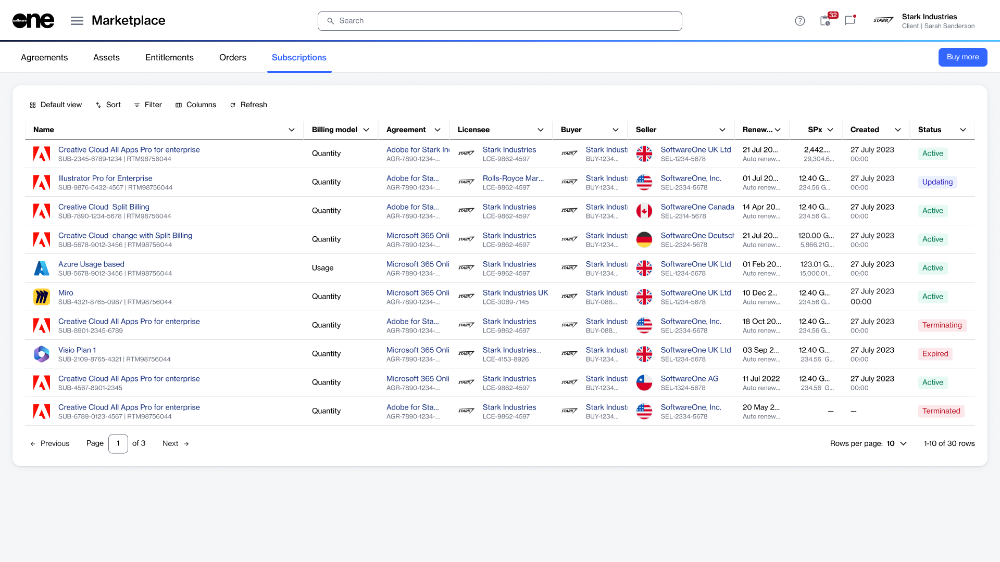
Status at a glance
Fig. DClient subscription list · hover to magnifyReal screens
Steady
Active
Running normally — nothing needs you.
In transition
UpdatingTerminating
A change is in flight — check before acting.
Ended
ExpiredTerminated
No longer running — history stays visible.
Object pages
One structure for every subscription object.
The marketplace used reusable templates for its collection and detail pages. I applied a consistent object-page structure, so people didn’t have to relearn each page and new marketplace capabilities were easier to introduce.
ABCDE
Fig. EAnatomy of an object page · hover to magnifyReal screens
AA summary of the subscription and its current state.
BA clearly prioritised primary action.
CSecondary actions for less common tasks.
DContextual status and ownership information.
ETabs organising commercial, operational and historical information.
Working iteratively
Concrete scenarios kept every review honest.
I developed the workflows through iterative design reviews with Product, Engineering and business stakeholders, testing each design against realistic situations:
Purchasing a subscriptionScenario
Spotting an item that needs attentionScenario
Knowing who owns the next actionScenario
Making a change without an agreement conflictScenario
Feedback refined the available actions, status language and information hierarchy before implementation.
Impact · Google Analytics
The four most-viewed pages on the marketplace are mine.
Google Analytics for the marketplace’s production site tells the story. Over 28 days, from 16 September to 13 October 2026, the home, agreements, subscriptions and orders pages I designed were the four most-viewed pages out of 165,102. Together they drew about one in five of all page views.
The home page works as the hub: it’s the most-viewed page, and people move through it quickly. The agreements, orders and subscriptions pages are where the work happens, and each holds attention for longer than the site average of 1m 57s per active user.
Top 4most-viewed marketplace pages are all ones I designedRanked by views · 165,102 page paths
+65%longer engagement on Agreements than the site average3m 13s vs 1m 57s per active user
1 in 5of all marketplace page views land on these four pages19.3% of views · home 10.1%
Average engagement time per active userTop 4 most-viewed pages · all designed by me
Designed by meSite average
Site average · 1m 57s
/commerce/agreementsDesigned by me3m 13s+65%/commerce/agreements3m 13s per active user · 65% above the site average #2 most-viewed page · 10.64 views per active user
/commerce/ordersDesigned by me2m 10s+11%/commerce/orders2m 10s per active user · 11% above the site average #4 most-viewed page
/commerce/subscriptionsDesigned by me · this case study2m 08s+9%/commerce/subscriptions2m 08s per active user · 9% above the site average #3 most-viewed page
/homeDesigned by me · hub page1m 25s−27%/home1m 25s per active user · 27% below the site average #1 most-viewed page · 10.13% of all views
01m2m3m4m
View data table
Page
Rank by views
Share of views
Engagement / active user
vs site average
Views / active user
/home
1
10.13%
1m 25s
−27%
10.10
/commerce/agreements
2
4.15%
3m 13s
+65%
10.64
/commerce/subscriptions
3
2.80%
2m 08s
+9%
6.80
/commerce/orders
4
2.23%
2m 10s
+11%
6.60
My 4 pages combined
1–4
19.31%
—
—
—
Site average (165,102 pages)
—
100%
1m 57s
—
8.83
Source: Google Analytics 4, Marketplace Platform production property, Pages and screens report, last 28 days (16 Sep – 13 Oct 2026). Raw traffic counts left out.
Fig. FWhere people spend their time — GA4, Marketplace production28 days
Sales adoption
Sales could demo it without Product or Engineering in the room.
After launch, customers completed more subscription-management workflows on their own. Sales teams could demonstrate the experience unaided — a sign that the subscription model, states and ownership rules made sense to people without deep operational knowledge.
When an integration quietly stops syncing, IT admins find out from a ticket — after automation has already acted on stale data. I designed a consequence layer that shows what a failure is about to cost, and lets admins act before it does.
Role
Senior Product Designer
My contribution
Research synthesis, product framing, MVP prioritisation, journeys and flows, interactive prototyping
Team
Product, Customer Success, internal IT, engineering and domain experts
Stage
MVP prototype, validated with customers through CSMs
Fig. AData Health overview — interactive prototypeReal screens
At a glance
From a ticket after the damage to a warning before it.
When the data feeding my asset workflows may be stale, I need to know which records and automated actions I can still trust — so I can intervene before a device is wrongly marked inactive or archived.
What changed
Framed a broad “data trust” idea as one job to be done for IT admins.
Cut recovery from 17 subtasks across 5 screens and 3 people to 6 steps in one place.
Moved discovery from stage 04 (someone complains) to stage 01 (the sync fails).
Checked all 20 prototype claims against the platform before customers saw it.
Built an interactive MVP with Claude and Oomnitza’s design system.
How I worked
Interviewed internal stakeholders, an internal IT admin and Customer Success.
Sketched the end-to-end journey of one integration failure.
Broke the admin’s task down with hierarchical task analysis (NN/g).
Prototyped with a Claude skill grounded in our components and patterns.
Audited feasibility with engineering, then validated with customers through CSMs.
Context
One hub, many arms — and any arm can go quiet.
Oomnitza is an enterprise technology management platform. It connects to the tools IT teams already use — Okta, Jamf, Intune and more — and brings that data into one place, so admins can see who owns which hardware, software and cloud assets.
Teams rely on it at high-stakes moments: preparing for an audit, onboarding a new hire, offboarding someone who’s leaving. The company wants Oomnitza to be IT’s source of truth — but a source of truth only works if people trust the data.
All six integrations syncing on schedule.
Fig. BEvery arm is an integration. If one stops syncing, Oomnitza is left holding stale data.NTS
1Integrations stop syncing, quietly
The sync stalls, and nothing says so.
The warning gets lost in a pile of alert emails.
Automation trusts stale data and archives active devices.
2The data is complete. But is it right?
Every field is filled in…
…but the systems disagree.
Admins check by hand, and still can’t prove it.
The journey
Confidence doesn’t fall when the integration fails.
I mapped one integration failure from steady state to prevention, based on interviews with IT admins and Customer Success. The insight was in the gap: for four stages, the data is wrong and nobody knows.
Nobody knows
Someone finds out
Recovery
damage piles up, silently
00Steady state“Asset data is fine. It has been fine for months.”
01Silent failure(Nothing. Asleep. It is 02:04.)Data Health alerts here
02Stale data spreadsA frozen value reads exactly like one written a minute ago.
03Downstream harm(Unaware.) Workflows act anyway: 17 records changed.
04Discovery, from a person“Why is this device archived? It was issued three weeks ago.”
05Working backwards“How long has this been going on, and what else did it touch?”
06Translation and escalation“Is this an outage, a permissions change, or a rotated key?”
07Fix and re-run“Green again. Are we actually back to normal?”
08Clean-up and proof“Which of those 17 were wrong, and what do I tell them?”
09Prevention“I am not finding out from a ticket again.”
The integration fails here… and confidence doesn’t move.It falls here, when a person finds out.
assumed fine
assumed fine (wrongly)
assumed fine (wrongly)
assumed fine (wrongly)
collapses
low and uncertain
low, waiting on others
partly restored
restored, with caveats
guarded
The MVP moves discovery from stage 04 back to stage 01
Confidence doesn’t fall when the integration fails. It falls when a person finds out — four stages later.
Fig. COne integration failure, start to finish — sketched from interviews with IT admins and Customer Success10 stages
Breaking down the task
17 subtasks, 5 screens, 3 people — down to 6 steps in one place.
Starting from the admin’s goal, I used hierarchical task analysis to map what they do today, based on interviews with an internal IT admin and Customer Success. The pain points — unlinked screens, a guessed blast radius, no proof of recovery — became the brief for the proposed flow.
GoalDon’t let automation act on data I can’t trust
Today17 subtasks · 5 screens · 3 other people · starts from a ticket
Proposed6 steps · one place · starts before the next workflow runs
1
Notice something is wrong
A ticket arrives. Open the record. Is the value wrong?
Learns from a person, not the product
1
See what the failure will cost
“3 processes will act on unconfirmed data in 5h 40m”, or an Unconfirmed field on the record
Overview
Record
2
Find the cause
Record history → status (“processing”) → run logs → “401”
3 screens, no link between them
Asks a colleague
2
Check the evidence
Run history, the fields the source writes, when each last changed
Evidence
3
Work out the blast radius
When it started, which records, which workflows ran
No tool does this: guessed
3
See the impact
412 records, the 3 processes that read them, and the window
Impact
4
Get it fixed
Contact the owner, Support or the CSM. Wait. Re-run.
Waits on others
4
Choose a response
Hold the processes (recommended), re-run now, or accept the risk
Still waits on the owner
Guided response
5
Clean up and prove recovery
Check what refreshed. Fix records. Explain to whoever asked.
Recovery asserted, not evidenced
5
Confirm recovery
Full run done, processes released, a before/after record kept
Verification
6
Prevent it happening again
Build a saved search or another alert
More alerts, more fatigue
6
Review the rules behind the signals
Oomnitza’s checks here; custom rules stay in Guard
Health rules
Plan: starts only when a ticket arrives, because failure emails are ignored. By then, workflows have already acted on stale data.
Plan: have a working credential? Re-run now. Otherwise hold the processes (recommended). Accepting the risk is allowed, but recorded against your name.
Fig. DHierarchical task analysis — one goal, today vs proposedNN/g HTA
The prototype
Lead with what’s about to happen, not what broke.
I built the first screens with a Claude skill grounded in Oomnitza’s design system — real components, exact tokens and page patterns (the design system case study → covers how). Each proposed step maps to a place in the product.
Consequence first: the smallest number leadsWhat’s about to happen, not what brokeRisk as time, or as uncertainty
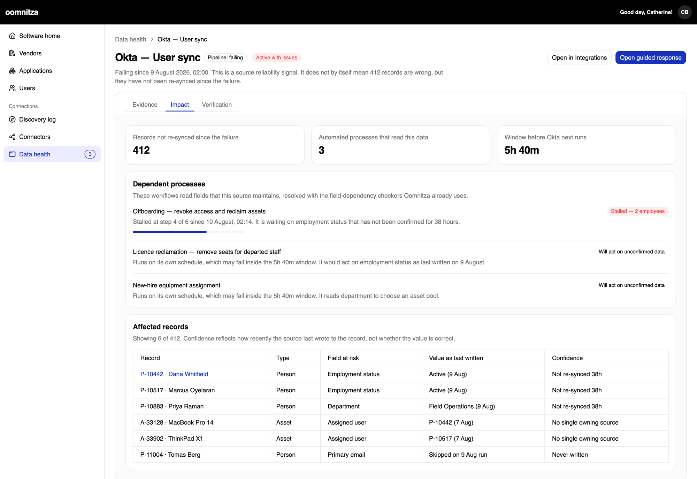
Evidence · Impact · VerificationChoose a responseThe window before the next runStalled at step 4 of 6, waiting on unconfirmed data
Fig. EData Health prototype · hover to magnifyReal screens
The smallest number leads: 3 dependent actions at risk, with the time left before Okta next runs.
The headline banner says what is about to happen to the business, not that a connector failed.
Risk is shown as time where a deadline is known, and as uncertainty where it isn’t.
Evidence, Impact and Verification follow the proposed steps in order.
Offboarding is stalled at step 4 of 6, waiting on employment status that hasn’t been confirmed for 38 hours.
Confidence reflects how recently the source wrote to the record — not whether the value is correct.
The same person record, 38 hours after Okta stopped syncing. Today nothing tells the two apart. With field status, each value says whether its source has confirmed it — and the one a workflow is waiting on stands out.
Fig. FDana Whitfield’s record — today vs with field status · hover to magnifyReal screens
Collaboration with engineering
Every claim, checked against the platform.
Engineering carried a lot of tech debt, so before the prototype went in front of customers I traced each number, status and action back to something Oomnitza already ships — or marked it as new work. I wanted customers to react to something real.
Exists today8Already ships. Data Health assembles it.
Failed runs, “failing since”Connector run logs
Next scheduled runIntegration status widget, May ’26
Alerts on failed or missed runsIntegration contacts, May ’26
Skipped records and errorsRecord-level error logs
Which fields a source writesIntegration mapping view
Data quality checksGuard, relaunched Sep ’26
Re-authorise and run nowCredentials and manual run
Proof a full run completedConnector run logs
Exists, but scattered6The data is there. Joining it up is the work.
Which workflows use a fieldDependency checker: an on-demand admin tool, not a live query
Records a source managesSync scope, not per-record history
When a value last changedRecord history, only where it’s switched on
Licence reclamationA SAM licence rule in the rebuilt SAM, not a workflow
Who to escalate toIntegration contacts. There’s no owner field
Accepting the riskGuard’s ignore and resolve
New build4Real work, so later phases.
Which step a run has reached“Stalled at step 4 of 6”
A source of truth per fieldNeeded before any accuracy claim
Comparing Jamf’s value with oursJamf’s value isn’t stored separately
Field status on the recordNeeds per-field source attribution
Not now: tech debt2Would land in the most debt-heavy part of the platform.
Hold runs, release them laterA new state in the workflow engine
“Last checked” on every fieldA write per field, per record, per sync
Fig. GEvery claim, checked against the platform20 claims
The audit changed the design. Holding scheduled runs would need new work in the workflow engine, so the recommended response now uses controls that ship today: it deactivates the one workflow without a freshness gate and escalates to the integration’s existing contacts.
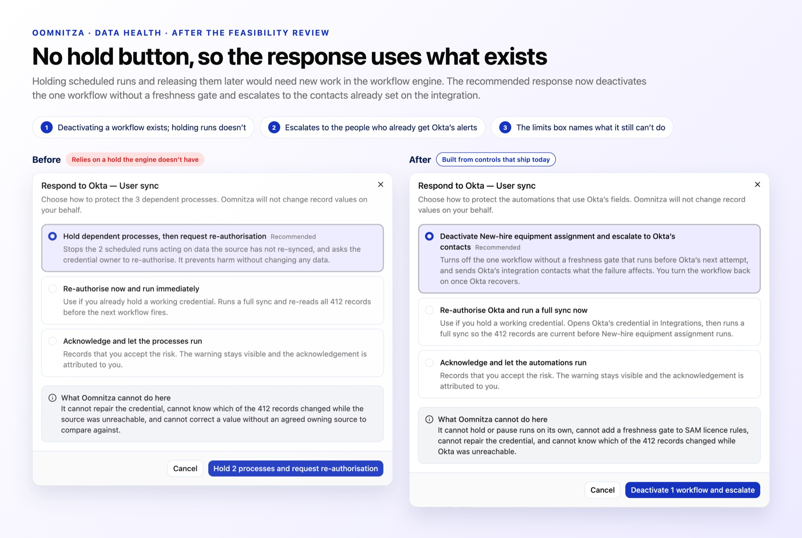
Fig. HNo hold button, so the response uses what exists · hover to magnifyReal screens
Research synthesis
From what they said to what changed.
I used the jobs-to-be-done framework for interviews with IT admins and systems admins, then broke what I heard into atomic nuggets — single observations — and grouped them into insights. Each insight had to change something in the design.
Maite · IT asset managerRory · Systems admin! Pain point· Need
What they saidInsightWhat changed
“I wouldn’t switch off someone else’s workflow.”Maite! AnxietyRespond
“Escalate should open a ticket in our tracker, not an email.”Rory· NeedRespond
The person who sees the risk often doesn’t own the fixBoth personas · 2 nuggets
“Escalate only” option, and escalation opens a ticketCloses itself when the source completes a full run.
“This ‘what changed’ table is basically my audit evidence.”Maite· NeedVerification
“Show me my problems: assets, licences, leavers.”Maite· NeedClosing
Would only open the page when an alert fires.Rory· NeedClosing
Doers act on now; overseers report on over timePersona split · 3 nuggets
A workspace for doers, a dashboard for overseersScores, owners, leavers and an exportable log.
“If it says three things use Okta and there are five, I’m done with it.”Rory! TrustImpact
Trusts the HR system, not Okta, for employment status.Maite! TrustDana’s record
Trust depends on knowing how fresh, and whose, the data isBoth personas · 2 nuggets
“Index last updated” on the dependency listA source of truth per field stays Phase 2.
Read the “Unconfirmed” chip as “this value is wrong”.Maite! ConfusionDana’s record
Didn’t know what “Gated” meant.Maite! ConfusionImpact
Labels must say what is known, not imply moreAsset manager · 2 nuggets
“Source failing” and “Waiting for fresh data”Words about the source, not the value.
Tried to click “Sources with issues”. Nothing happened.Rory· NeedOverview
“I’d want it to alert when it’s been waiting more than a day.”Rory· NeedFreshness gate
Every number should lead somewhere, and every wait needs a limitSystems admin · 2 nuggets
Clickable overview cards, and a 24-hour gate alertCounts open what they count.
Method: these nuggets come from simulated walkthroughs with two personas built from real job descriptions. They are hypotheses, not findings — the plan was to re-run the same synthesis on the customer calls.
Where I left it
Earn trust first, then claim accuracy.
When I left Oomnitza in September 2026, the MVP claimed only what the platform could already evidence. The bigger promises were scoped to later phases, once the platform could back them up.
Later phases — new build
A source of truth per field, before any accuracy claim
Field status on the record, with per-field source attribution
Which step a run has reached
Comparing Jamf’s value with Oomnitza’s
Not now — tech debt
Holding runs and releasing them later
“Last checked” on every field
Planned validation
Customer calls through CSMs, re-running the same synthesis
During Oomnitza’s migration from MUI to shadcn/ui, I partnered with frontend engineering to strengthen Storybook — then built a governed Claude workflow grounded in implemented components, exact GitHub tokens and product-level patterns.
Role
Product Designer
Team
Product Design and Frontend Engineering
Focus
Design-system architecture and AI-assisted prototyping
Stack
shadcn/ui, Storybook, Claude Code, Figma tokens in GitHub
DESIGN_SYSTEM.mdImplemented component catalogue: props, tokens, real examplesAuto-synced from Storybook stories
PATTERNS.mdBehaviour and page composition: states, layouts, recipes
Claude design-system skillReads all three layers and applies shared guidance
BuildGenerates product-accurate HTML prototypes
ReviewChecks component, pattern and business-rule adherence
Auto-synced from codeGoverned contextClaude skillOutputs
Fig. AOne skill, three governed context layersWorkflow
At a glance
Better prompts weren’t the fix. Better sources were.
Early outcomes
A shared component hierarchy and template structure, agreed with frontend engineering.
Storybook strengthened as an implementation reference for both people and AI.
Claude output moved from generic approximations to product-aligned prototypes.
Prototype discrepancies turned into requirements for components, documentation and skill guidance.
A repeatable workflow for generating, reviewing and improving AI-assisted prototypes.
What I did
Defined the design side of the system: how tokens, components and page layouts relate.
Ran the Atomic Design decomposition with frontend engineering in FigJam.
Built and iterated the Claude design-system skill.
Wrote PATTERNS.md and the business context layer.
Used each generated prototype as a test of the system.
Establishing the foundation
More than a visual refresh.
During the move from MUI to shadcn/ui, my role was the design-side structure of the system: how tokens, components and recurring enterprise page layouts should relate to one another.
In FigJam, frontend engineering and I decomposed existing product screens using Atomic Design as a shared language — from primitives like buttons and inputs, through metric cards and filters, to page headers, data grids and the templates behind recurring collection and detail pages. Together we agreed the boundaries, naming and hierarchy that would guide implementation in Storybook.
AtomsButton, input, icon, badgeshared Storybook component boundaries and template structure.
Fig. BDecomposing an enterprise collection page, from atoms to app shell (redrawn)FigJam
Testing the first hypothesis
Plausible at a glance. Not product-ready.
Alongside the system work, I tested whether Claude Code could use Oomnitza’s repository and Storybook to generate prototypes that reflected the real product. I connected it through a design-system SKILL.md, expecting access to the implemented components to be enough context. The first prototype, a Publishers page, looked right — until you compared it with the product.
Publishers.html — data gridgenerated vs implemented
<section class="publishers">
<table class="table"> ← a generic table, styled to look close enough
<DataGrid /> ← Organisms/DataGrid: pagination, adapters, empty and loading states
└ AgGrid — thin, shadcn-themed wrapper; the only file in @oomnitza/ui that imports ag-grid
</section>
Gap 1Which implementation is authoritative
Gap 2How product dependencies should be configured
Gap 3How runtime assets should be handled
Improving the source, not the prompt
Treat every discrepancy as evidence about the system.
Rather than hand-correcting each prototype, I worked with frontend engineering to clarify component boundaries and expand Storybook with more robust shadcn/ui components, variants and recurring page structures. I iterated the skill so Claude could find and prioritise the right stories and source.
As Storybook became a more accurate picture of the product, Claude had better context to work from — and the workflow referenced the exact design tokens stored in GitHub instead of approximating colours, spacing, type and radii.
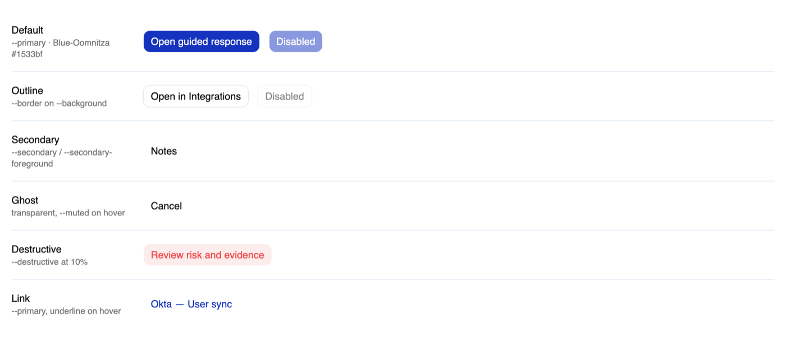
Fig. CExact tokens, and variants that resolve to themStorybook
Patterns and business context
Components explained what existed — not how to build a page.
A stronger Storybook told Claude which components existed and how they behaved. It still didn’t explain how to assemble them into a complete Oomnitza experience. So I added a patterns layer and a business layer, and taught the skill to apply all of them.
Storybook + DESIGN_SYSTEM.md
Implemented components, properties, tokens and examples.
PATTERNS.md
Rules for composing components into enterprise pages: layouts, relationships, expected states.
BUSINESS_CONTEXT.md
Oomnitza’s terminology, workflows and operational rules.
SKILL.md
How to apply these sources when building and reviewing prototypes.
Using prototype failures to improve the system
Generate. Compare. Fix the source. Regenerate.
Each generated prototype became a test of the design system and its documentation. The loop improved prototype fidelity — and exposed gaps in the system earlier than shipping would have.
Data Health: the closest Claude has come to the real product.
The Data Health prototype is the most recent test of the workflow: exact tokens from GitHub, the improved Storybook integration, page-pattern guidance and the updated skill. Compared with the first experiment, it far more closely reflects Oomnitza’s product shell, component styling, information density and interaction patterns.
It remained a prototype, not production code, and human review was still essential — but it was a credible starting point for product exploration, design review and engineering collaboration. Read the Data Health case study →
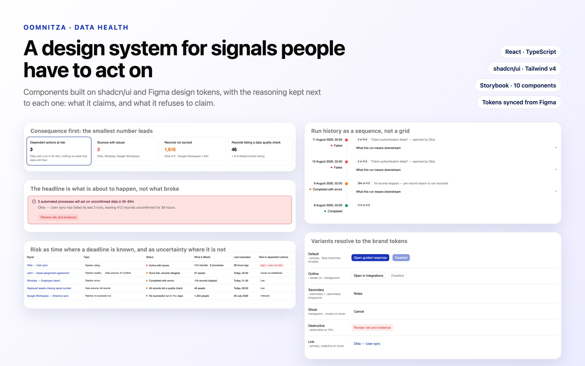
Fig. EA design system for signals people have to act on · hover to magnifyReal screens
Components with reasons
Every component carries a decision.
For Data Health I pulled the prototype apart into a small Storybook library, so each decision could be looked at — and argued with — on its own. The prototype is then built from those same components, rather than a second implementation that slowly drifts.
The overview row is ordered by consequence, not by size. The smallest number leads; the largest is last.The headline is what is about to happen, not what broke. One deadline, one action.
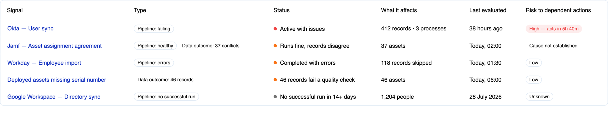
Risk is expressed as time where a deadline is known, and as plain uncertainty where it is not.Run history as a sequence, not a grid.Colour is never the only carrier of meaning, and “we do not know” is a real state.Pipeline and data outcome are two lenses, not two categories, and each carries its state.
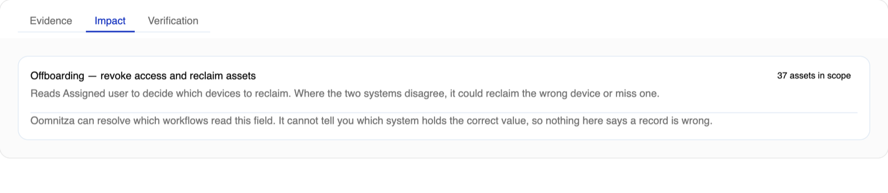
Each tab answers one question, and only appears when the system can answer it.
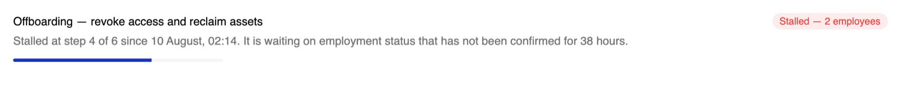
States the dependency, never a prediction about which records are wrong.
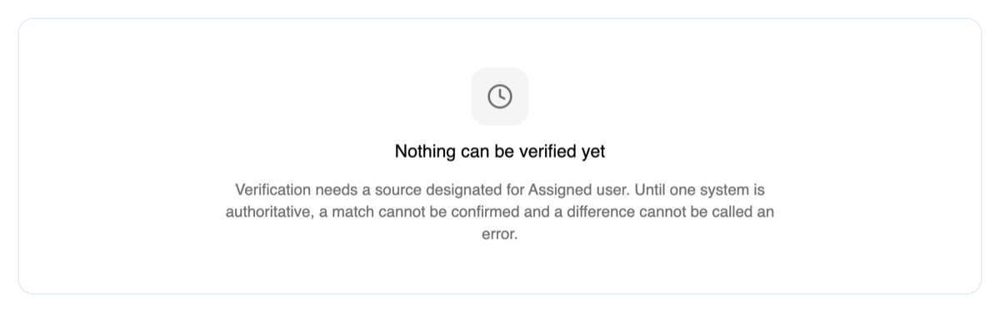
Says what would have to be true before the panel can fill.Variants resolve to the brand tokens — Blue-Oomnitza is --primary, never a repeated hex.
Fig. HData Health components in Storybook — each with the decision it carries10 components
Every component has at least one story for the uncertain case. If a component can’t express “we do not know”, it will eventually overstate something.
What I learned
AI output is only as good as its sources.
AI output is constrained by the quality and completeness of its source material — not simply the prompt.
Repository access doesn’t automatically give an AI the context to reproduce a product accurately.
Component documentation needs page-level composition guidance and business rules beside it.
Prototype generation works as a diagnostic tool, exposing weaknesses in a design system.
Human comparison against the live product remains essential.
SquadCurve: player progression,not just statistics
Following Irish players across clubs and leagues means piecing together match reports, stats sites and transfer news — and raw numbers still don’t answer what fans actually ask. I designed and built a product that does, and says plainly what it doesn’t know.
Fig. ASquadWatch and position battles, on desktop and phoneLive site
At a glance
Product ownership across the whole system, not one feature.
I decided what the product should do, worked out what fans actually needed, designed the information architecture, built the interface — and improved the data workflow underneath it as the product grew.
242commits in 8 weeks
87eligible players tracked
106cited research sources
37components
20Storybook stories
49test files
The problem
Raw statistics don’t answer the questions fans have.
Information about Irish players is scattered across match reports, statistics sites, transfer news and club pages. I wanted SquadCurve to turn that into something easier to understand, at three levels.
The squad
Who’s emerging?
Where is depth improving?
Which positions are weak?
The player
How are they performing?
Are they playing?
What does their trajectory look like?
The evidence
Which games support that?
Which metrics matter?
How current is the data?
Product tour
From one pitch to every player.
SquadWatch answers the squad questions at a glance; position battles, the player list and player pages carry the detail and the evidence.
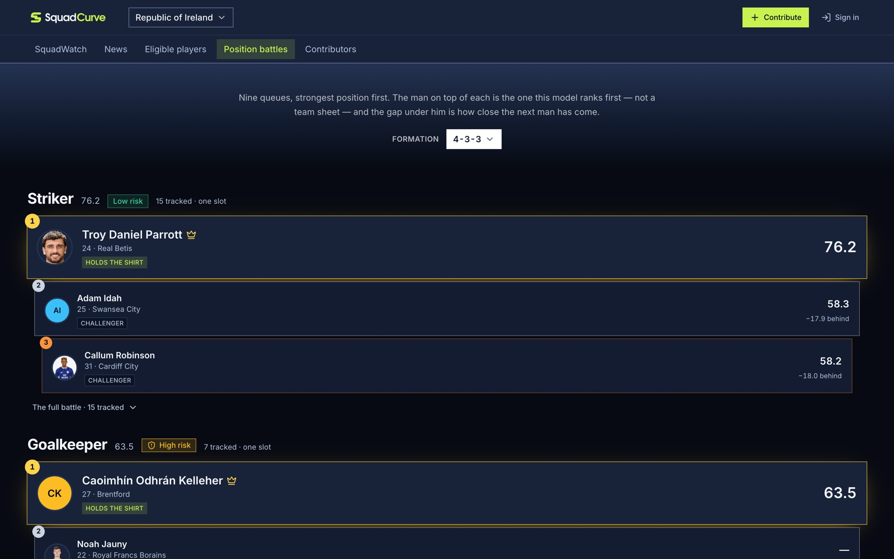
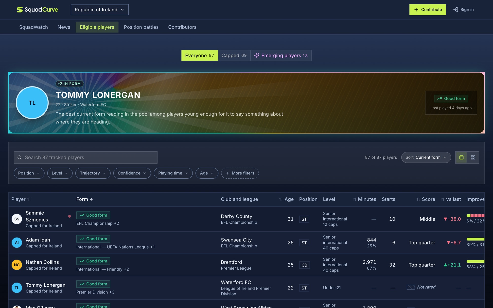
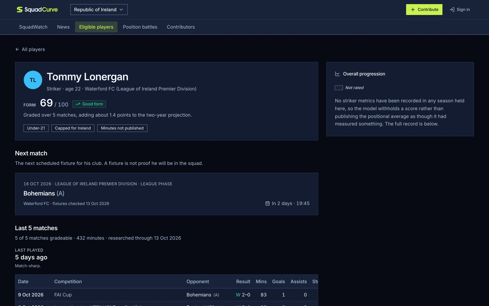
Fig. Bsquadcurve.com · hover to magnifyLive site
Real results lead to “Best XI — who should start now” and “Next squad — in 12 months”.
The eleven is picked from the 25 players actually named for this window, so it’s one that could take the field.
Scores sit on each player; tap anyone for their club, last matches and what the model makes of them.
Nine queues, strongest position first.
The man on top is the one the model ranks first — “not a team sheet” — and the gap under him shows how close the next man has come.
Each position carries a depth-risk label, so thin areas stand out.
Every tracked player, filterable by capped and emerging.
The spotlight picks the best current form among players young enough for it to say something about where they’re heading.
Form graded over the last five matches, and how much it moves the two-year projection.
The next fixture comes with a caveat: “A fixture is not proof he will be in the squad.”
The raw season record is kept apart from model output.
A fan site that confidently ranks players on thin data is worse than no site at all. So the product says what it knows, how it knows it, and — just as visibly — what it won’t claim.
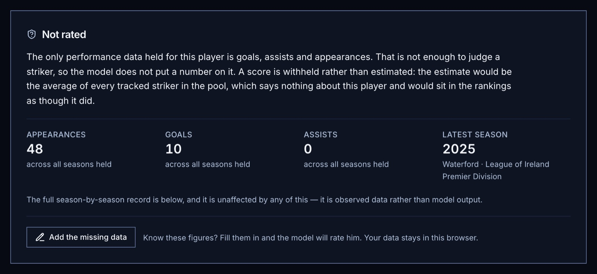
Fig. C“A score is withheld rather than estimated” · hover to magnifyLive site
Two tiers, never blended
A transparent statistical model and a dated, sourced research snapshot each have their own methodology and evidence.
Nothing is invented
An unverified fact stays empty and is listed as a gap — never a guessed number or a plausible-sounding placeholder.
Every claim has a source
Each fact traces to a direct article URL; the data schema rejects search-results pages as sources.
Say only what the data supports
“The pool at a position is strengthening” and “Ireland will qualify” are different claims. Only the first is ever made.
A fixture is not proof he will be in the squad.Everyone in the pool is assumed fit, which is not the same as confirmed fit.Who actually makes the bench is the manager’s call.The full season-by-season record is unaffected — it is observed data rather than model output.
The decision log
Commit messages written as product decisions.
I write commits in plain English as decisions — what the product now says, or stops saying — so the history doubles as a design log. A few of the 242:
$ git log --onelinecatbutt2019/FTracker · 20 Aug – 14 Oct 2026
373da6814 OctKeep the score badge off the player’s face on a phonephone
432b81a14 OctSay what approving a claim has not done, where the reviewer is lookingcommunity
dce24d703 OctSay when a form rating is too thin to act on, and stop guessing opponentshonesty
4144bb703 OctLet a reader add a match the research has never heard ofcommunity
92ddfa729 SepStop printing three different numbers as if they were onelanguage
441f84b28 SepName the model’s eleven for whose it is, not for whenlanguage
3ae0eaf09 SepShow the sections on a phone instead of hiding them behind a hamburgerphone
0fb3d1709 SepLet a reader pick the XI, and see what each change costsinteraction
92b30c709 SepSay when a club is playing, and only when the clock can be trustedhonesty
86be13909 SepSay where every player stands, and which calls are closelanguage
128ed3504 SepMake the contributors page a feed of what was found, not who found itcommunity
d59421b04 SepSay a proposal is anonymous before it is sent, not aftercommunity
cf3e7bf21 AugStop missing data reading as poor performance in defender scoringhonesty
edb142221 AugStop the league badge scoring players we have no data onhonesty
373da6814 OctKeep the score badge off the player’s face on a phonephone
432b81a14 OctSay what approving a claim has not done, where the reviewer is lookingcommunity
dce24d703 OctSay when a form rating is too thin to act on, and stop guessing opponentshonesty
4144bb703 OctLet a reader add a match the research has never heard ofcommunity
92ddfa729 SepStop printing three different numbers as if they were onelanguage
441f84b28 SepName the model’s eleven for whose it is, not for whenlanguage
3ae0eaf09 SepShow the sections on a phone instead of hiding them behind a hamburgerphone
0fb3d1709 SepLet a reader pick the XI, and see what each change costsinteraction
92b30c709 SepSay when a club is playing, and only when the clock can be trustedhonesty
86be13909 SepSay where every player stands, and which calls are closelanguage
128ed3504 SepMake the contributors page a feed of what was found, not who found itcommunity
d59421b04 SepSay a proposal is anonymous before it is sent, not aftercommunity
cf3e7bf21 AugStop missing data reading as poor performance in defender scoringhonesty
edb142221 AugStop the league badge scoring players we have no data onhonesty
Fig. DSelected commits, newest first — hover to pauseGit
Readers as researchers
When the data has a gap, let the people who know fill it.
Fans often know a figure the research doesn’t. So a gap becomes an invitation, and every correction goes through review before it changes anything.
01 · Spot A player is “Not rated” — and the page says exactly which figures are missing.
02 · Add A reader fills them in. Their data stays in their browser until they choose to send it.
03 · Review Claims join a review queue. Reviewers are told what approving a claim has not done.
04 · Credit Accepted corrections show on the player’s page, and the contributors page is a feed of what was found, not who found it.
Using AI in the workflow
Not just for generating UI.
I used Claude across the whole product development process — and treated the data itself as something to inspect every loop.
Researching player performancesStructuring and validating dataWriting and refining requirementsPrototyping interface ideasBuilding reusable componentsReviewing implementation qualityFinding missing or stale player information
01Define
02Build
03Test
04Inspect the data
05Refine
↺ and round again
Outcome
From a simple tracker to a working product.
What exists now
A structured, sourced player dataset
Squad and positional views
Detailed player profiles with recent match performance
Reusable design tokens and components
A process for keeping player data current, with reader corrections and review
What it taught me
Owning the whole system changes the questions you ask — data quality becomes a design problem.
Saying what you don’t know builds more trust than a confident guess.
Plain-English decisions in the commit log make a solo project reviewable.